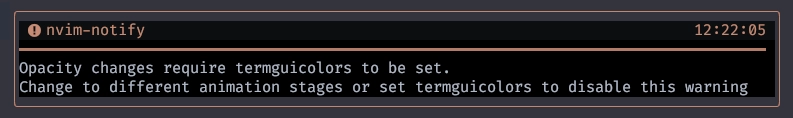

nvim_set_option_value
一粒万倍日 が連続4日で続いてて、今日が4日目らしいですね🥳
"万倍" の4乗で "京倍" ですって。
そういえば最近、新しく"京" 🗼を見下ろせる麻布台ヒルズって場所を知ったんだよねー。
I say high, you say low
You say why and I say I don't know
僕は「高い」、きみは「低い」
きみは「なんで」そしたら僕は「わからない」
わたしのような庶民でも、運転士付きの日比谷線 🚋🚋 で麻布に乗り付けて、
スカイロビーに (タダで) 上れるんざます。セレブ❗
そのまま日比谷線の運転士に頼んで 「宝くじが当たる💴」で有名な銀座のチャンスセンターまで行ってもいいんですけどね😌
ここでふと思うわけです。
「ただ販売本数が多いってだけで"当たりやすい"とは違うんじゃないの😮❓」ってね❗
"一粒万倍日" って、別にお金 💴 増やす日ってわけじゃないし、 「宝くじを買えば当たる日」ってこともないぞ❤️
ただ、"買わないと当たらない" ぞ🫶🏻 ナイスフォロー❗
...よし。今日も絶好調🤣 1
nvim_set_option_value({name}, {value}, {*opts})
Sets the value of an option. The behavior of this function matches that of
:set: for global-local options, both the global and local value are set
unless otherwise specified with {scope}.
オプションの値を設定する。この関数の動作は、
グローバルローカルオプションの場合 {scope} で特に指定しない限り、
グローバル値とローカル値の両方が設定される。
Note the options {win} and {buf} cannot be used together.
オプション {win} と {buf} は一緒に使えないことに注意。
Parameters: ~
• {name} Option name
• {value} New option value
• {opts} Optional parameters
• scope: One of "global" or "local". Analogous to
:setglobal and :setlocal, respectively.
• win: window-ID. Used for setting window local option.
• buf: Buffer number. Used for setting buffer local option.
少し間が空いてしまいましたが、
今日は "nvim_なんちゃら_set_option" からnvim_set_option_valueへの更新をしましょう。
Nvim deprecated
The items listed below are deprecated: they will be removed in the future.
They should not be used in new scripts, and old scripts should be updated.
以下の項目は非推奨であり、将来削除される予定です。
新しいスクリプトでは使用せず、古いスクリプトは更新してください。
- nvim_set_option() Use nvim_set_option_value() instead.
- nvim_buf_set_option() Use nvim_set_option_value() instead.
- nvim_win_set_option() Use nvim_set_option_value() instead.
非推奨になっている項目は他にも挙げられていますが、このサイトでは上記3つを取り上げます。
packer.nvim→lazy.nvimのような「一回荷物を全部外に運び出して〜」みたいなことは一切なくて、
「ちょっとカーペットでも変えるか〜」程度の作業です。
Previously
「そもそも何がきっかけでやってるんだっけ❓」って前のページを見てみると...😮
vim.api.nvim_set_option_value('termguicolors', true, { scope = 'global' })
そうだそうだ。termguicolorsがきっかけでした。
...でしたが、これ見ました？
Enable 'termguicolors' automatically when Nvim can detect that truecolor is supported by the host terminal.
Nvim がホスト端末で truecolor がサポートされていることを検出した場合、自動的に'termguicolors'を有効にする。
'termguicolors' is correctly set on:
- iTerm2
- Ghostty
- Wezterm
- Kitty
- Alacritty
- tmux
使用する環境にもよるかもしれませんが、
わたしがなんか急にマジセレブになるよりも早く、stable releaseでもこれが不要となる日が来るのでしょう。
自分の環境でこれが自動で有効になるかどうかを確認するのは簡単です☺️
手元の設定からtermguicolorsを一回消してからnvimを起動してみましょう。
まだ未対応であればnvim-notifyが起動直後に警告してくれます。

逆に何も言われないのであれば、termguicolorsはもう書かなくても平気だとわかっちゃうわけです😋
将来的な機能なので、少なくとも現時点 (2023/12/08) のstable releaseでは実装されていません。
また、nvim-notifyがインストールされていることを前提としています。
これもまた、妙に奇跡的な噛み合いでしたね😁
Options
やっぱり自信はないんですが...。
global-local window options need to be handled specially. When win is
given but scope is not, then we want to set the local version of the
option but not the global one, therefore we need to force
scope='local'.
グローバルローカルウィンドウオプションは特別に扱う必要がある。
winは与えられるが、scopeは与えられない場合、
ローカルバージョンのオプションを設定したいが、グローバルバージョンのオプションは設定したくないので、
scope='local'を強制する必要がある。
v0.9.4以降とそれ以前でも動作が違うらしいので、このサイトではv0.9.4で実際に動かしてみたものを載せます。
I don't know why you say goodbye, I say hello
きみは「さよなら」と言うけど なんでだい
ぼくは「こんにちは」なのに
Global
前回はこんなのを例示していたんですが...、
vim.api.nvim_set_option_value('termguicolors', true, { scope = 'global' })
改めて試してみたら、global指定は必要なさそうでした😲
vim.api.nvim_set_option_value('termguicolors', true, {})
じゃあ、こうでいいのかな❓
vim.api.nvim_set_option_value('termguicolors', true, {}) -- いる？いらない？
vim.api.nvim_set_option_value('scrolloff', 4, {})
vim.api.nvim_set_option_value('ignorecase', true, {})
vim.api.nvim_set_option_value('smartcase', true, {})
vim.api.nvim_set_option_value('inccommand', 'split', {})
vim.api.nvim_set_option_value('clipboard', 'unnamedplus', {})
あと、lualine.luaにもポツンと書いたかも。
まあ、こんなとこでしょう。
Why why why why why why do you say goodbye?
Goodbye, bye bye bye bye...
なぜ？ なぜ さよならを言うの？
さよなら、バイバイ...
Window
わたしの解釈が正しいのか、いまいち判然としないんだけど、
これまで{window}を0で指定していたものは、もう特に明示しなくても良さそうです😉
だって、これと...
nvim_set_option_value('number', true, {}) -- local window option
これが等価だって言ってるんだもん。
nvim_set_option_value('number', true, {win=0}) -- unchanged from before
じゃあ、結果的にglobalと同じ感じで書いちゃっていいよね🐶
vim.api.nvim_set_option_value('number', true, {})
vim.api.nvim_set_option_value('cursorline', true, {})
vim.api.nvim_set_option_value('signcolumn', 'yes:1', {})
vim.api.nvim_set_option_value('winblend', 20, {})
vim.api.nvim_set_option_value('wrap', false, {})
Buffer
これなぁ😫
-- local to buffer options:
vim.api.nvim_create_autocmd({ 'BufEnter', 'BufWinEnter' }, {
pattern = '*',
group = vim.api.nvim_create_augroup('buffer_set_options', {}),
callback = function()
vim.api.nvim_set_option_value('expandtab', true, { buf = 0 })
vim.api.nvim_set_option_value('tabstop', 2, { buf = 0 })
vim.api.nvim_set_option_value('shiftwidth', 0, { buf = 0 })
end
})
...みたいに書き直せば良さそうです。
ただ...。
Sets the value of an option. The behavior of this function matches that of
|:set|: for global-local options, both the global and local value are set
unless otherwise specified with {scope}.
オプションの値を設定する。この関数の動作は、
グローバルローカルオプションの場合 {scope} で特に指定しない限り、
グローバル値とローカル値の両方が設定される。
Only the global-local option with a win provided gets forced to local scope.
winを指定した global-local オプションだけがローカルスコープに強制される。
ってことなので、逆に言えばbufは指定しなければglobalにも設定されそう...❓
じゃあ、これもglobalと同じ感じで書いちゃっていいよね。
vim.api.nvim_set_option_value('expandtab', true, {})
vim.api.nvim_set_option_value('tabstop', 2, {})
vim.api.nvim_set_option_value('shiftwidth', 0, {})
もはやautocmdもいらなくない⁉️
実際これでちゃんと動いてそうに見える🙂
(I say yes) (but I may mean no)
(I can stay) ('Till it's time to go)
(ぼくはイエス) (でもノーかもしれない)
(ここにいるよ) (帰る時まで)
Wrapping a function
ここでふと思うわけです。
「結果、全部同じパターンになったんじゃないの⁉️😳」ってね❗
じゃあ例えばこんなのを追加して使えば、全ての{}を省略して記述できます😆
local function nvim_set_option_value(name, value, opts)
vim.api.nvim_set_option_value(name, value, opts or {})
end
- vim.api.nvim_set_option_value('termguicolors', true, {})
+ nvim_set_option_value('termguicolors', true)
(わたし自身は使ってないので、これ以上は言及しないんですが)
この書き方だと同じファイル内でしか使えないので、 ちゃんとこの手段をとろうと思うのであれば、もう一手間加える必要があります🤔
Hela, heba helloa
そこまで念入りに確認したわけではないので、多少の不安は残りますが、
この種さえ蒔いておけば、なんか急にnvim_set_optionが削除されたとしても慌てることはないでしょう😉
2023年の12月では、さらに19,20日でまた一粒万倍日が並ぶみたいなので、 その頃にはまた新しい収穫があるかもしれません。
それを糧に、モチベーション上げていきましょ❗